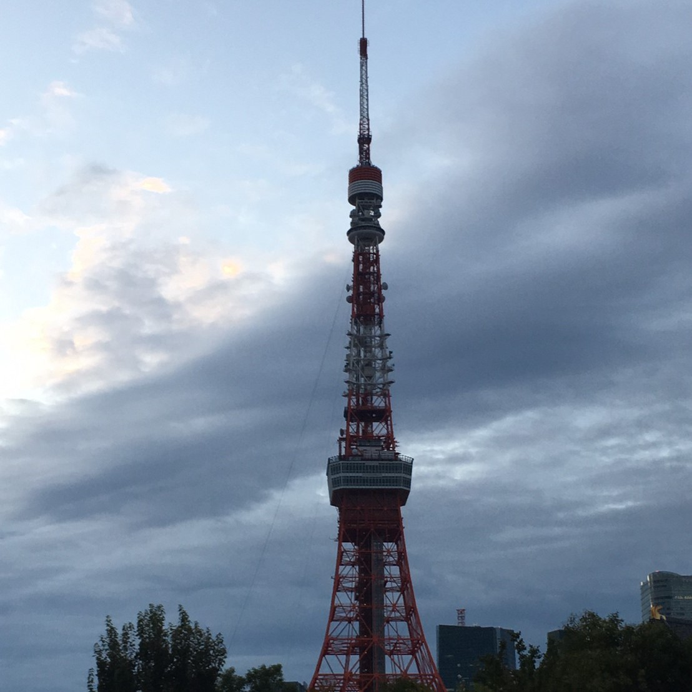
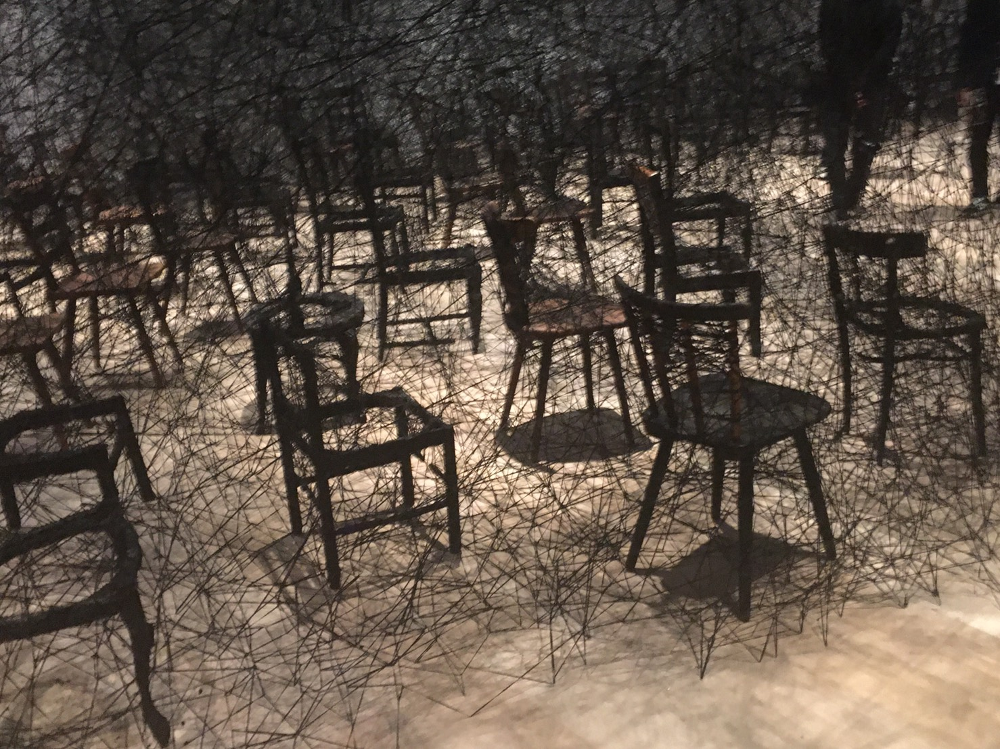
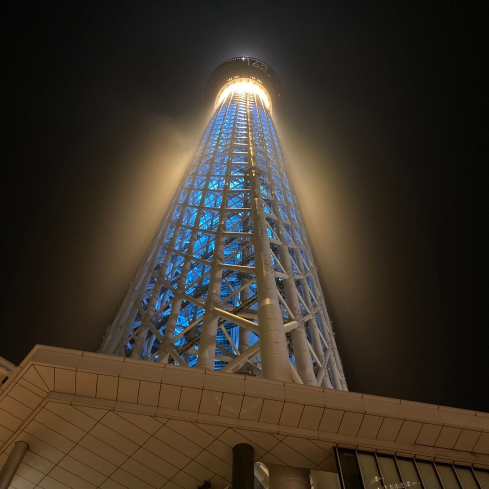
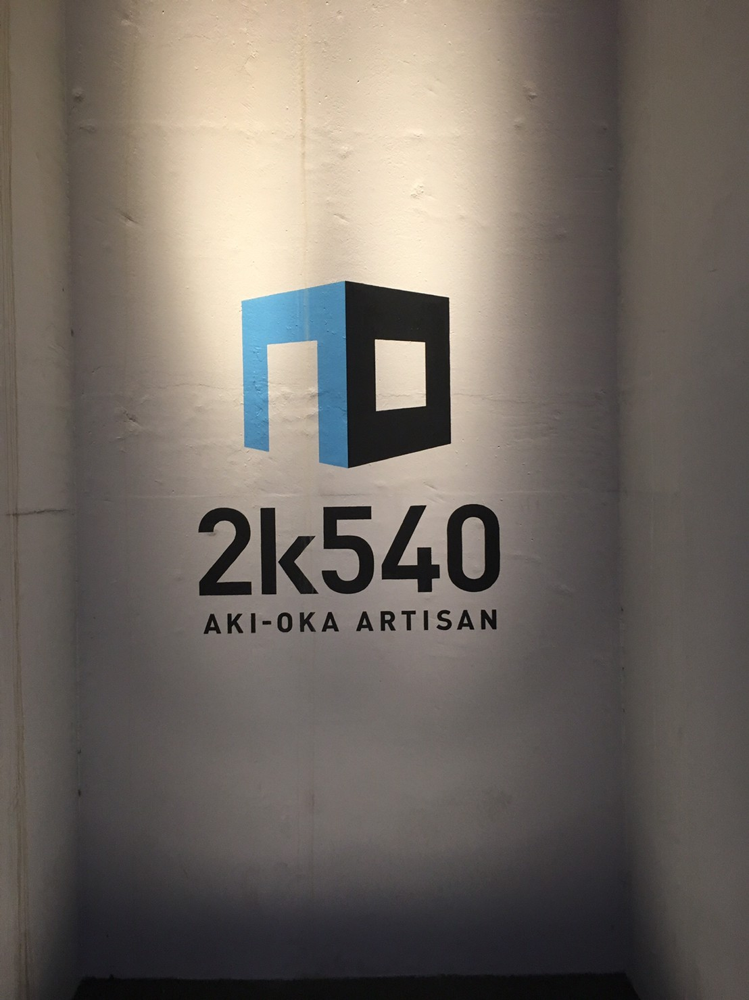
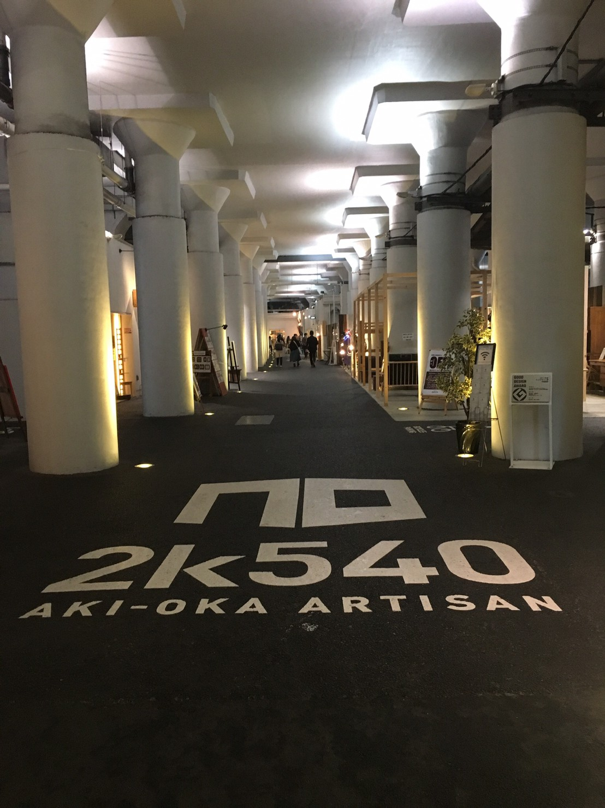
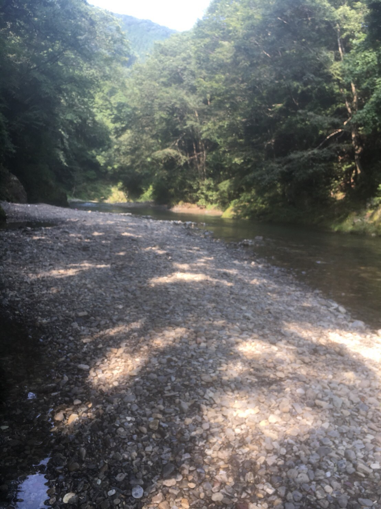
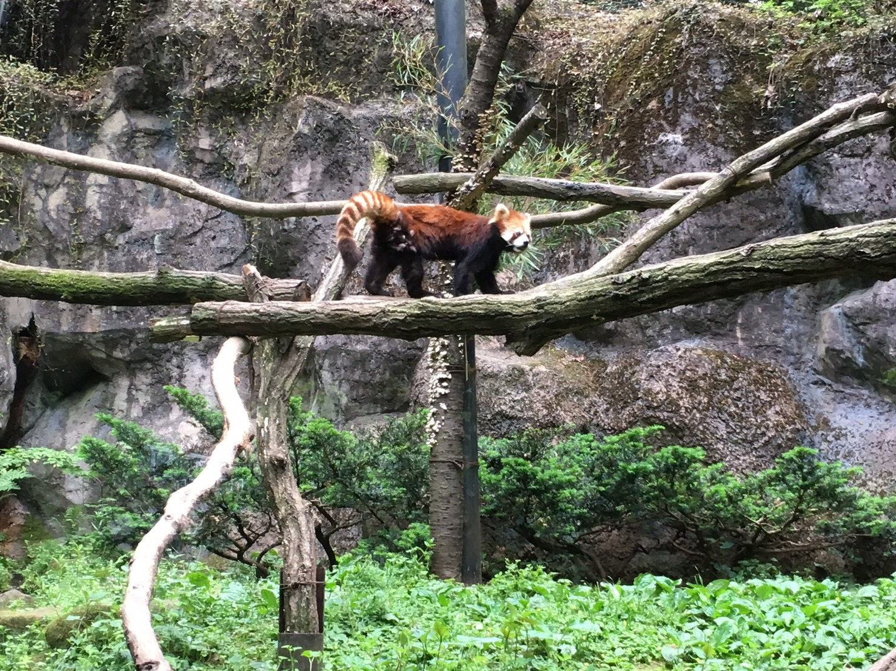
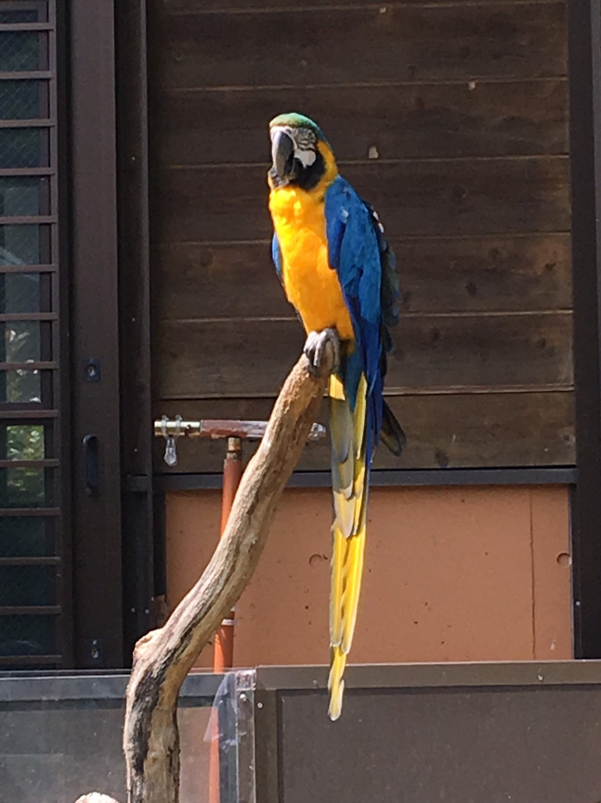
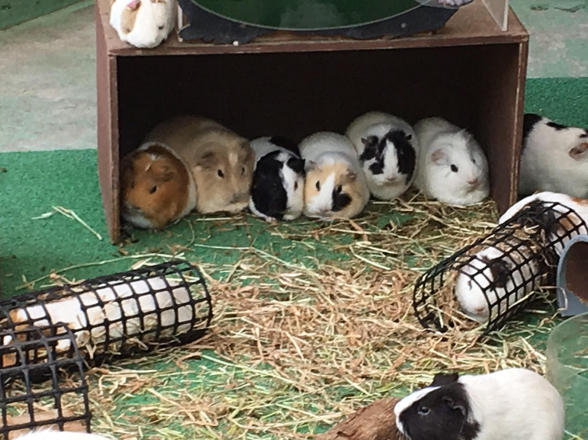

東京都
日本の首都．人口は日本一である．東京23区と多摩地域，東京都島嶼部から成り立つ．

赤坂・六本木

港区に所在する街または地区．
一昔前の東京のシンボルであった東京タワーや六本木ヒルズで知られている．また六本木ヒルズ内の森美術館は地上230mという日本最高所に位置する．
浅草・上野



東京都台東区の地名であり東京の下町．
現在の東京のシンボルである東京スカイツリーがあるほか，雷門やアメヤ横丁は連日外国人観光客でにぎわう．
多摩・奥多摩




一般に東京23区外の西東京を指し，そこに位置する．
23区とは違い壮大な自然に囲まれ，広い敷地面積を有する多摩動物公園や，自然ならではのキャンプ場が多数存在する．